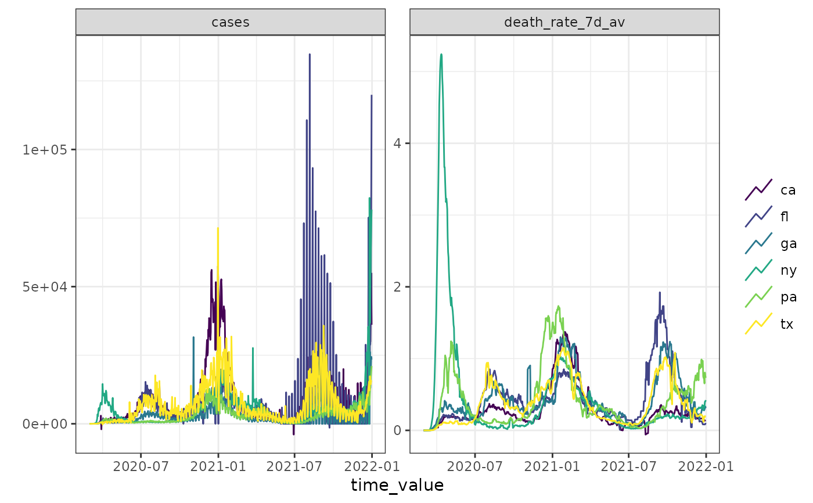

Automatically plot an epi_df
Arguments
- object
An
epi_df- ...
<
tidy-select> One or more unquoted expressions separated by commas. Variable names can be used as if they were positions in the data frame, so expressions likex:ycan be used to select a range of variables.- .color_by
Which variables should determine the color(s) used to plot lines. Options include:
all_keys- the default uses the interaction of any key variables including thegeo_valuegeo_value-geo_valueonlyother_keys- any available keys that are notgeo_value.response- the numeric variables (same as the y-axis)all- uses the interaction of all keys and numeric variablesnone- no coloring aesthetic is applied
- .facet_by
Similar to
.color_byexcept that the default is to display each numeric variable on a separate facet- .base_color
Lines will be shown with this color. For example, with a single numeric variable and faceting by
geo_value, all locations would share the same color line.- .max_facets
Cut down of the number of facets displayed. Especially useful for testing when there are many
geo_value's or keys.
Examples
autoplot(jhu_csse_daily_subset, cases, death_rate_7d_av)

autoplot(jhu_csse_daily_subset, case_rate_7d_av, .facet_by = "geo_value")
 autoplot(jhu_csse_daily_subset, case_rate_7d_av,
.color_by = "none",
.facet_by = "geo_value"
)
autoplot(jhu_csse_daily_subset, case_rate_7d_av,
.color_by = "none",
.facet_by = "geo_value"
)
 autoplot(jhu_csse_daily_subset, case_rate_7d_av,
.color_by = "none",
.base_color = "red", .facet_by = "geo_value"
)
autoplot(jhu_csse_daily_subset, case_rate_7d_av,
.color_by = "none",
.base_color = "red", .facet_by = "geo_value"
)
 # .base_color specification won't have any effect due .color_by default
autoplot(jhu_csse_daily_subset, case_rate_7d_av,
.base_color = "red", .facet_by = "geo_value"
)
# .base_color specification won't have any effect due .color_by default
autoplot(jhu_csse_daily_subset, case_rate_7d_av,
.base_color = "red", .facet_by = "geo_value"
)